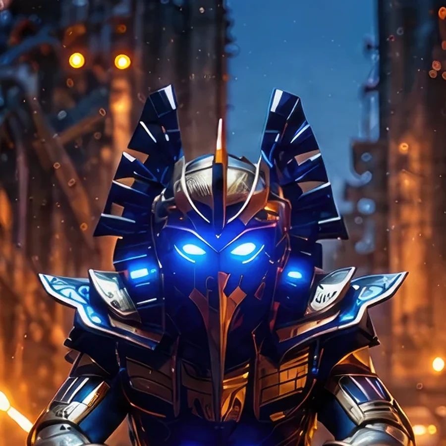

Field Observation
Belek discovers a green gyroscopic orb glowing beside equipment on the right. The orb may monitor alien operations within Earth 1 industry.
 ©
©
GENEZYS ARCHIVE · Legionnaire
Continuum Designer
Identity & combat record
Archive node 01 / 04

Archive record
Belek designed the watch the Eternal Custodian keeps over the Threshold. The Dimensional Warp bends space around the whole field, emptying every enemy's energy and striking all of them. If the portal ever opens fully, Belek is the one the Custodians expect to close it.
Combat signature
Bends spacetime around the field: Reduces all enemies' Cosmara to 0 for 1 turn and deals 100 damage to all.
Genezys 07:07 ™&©2026LEGIONS
Field intelligence
Archive node 02 / 04
FIELD REPORT // OBJECT DISCOVERY

Mission successfulAdditional intelligence available
Field Observation
Belek discovers a green gyroscopic orb glowing beside equipment on the right. The orb may monitor alien operations within Earth 1 industry.
Environment
Object Analysis
Key Findings
Restricted visual records
Archive node 03 / 04

Motion archive
Archive node 04 / 04
Motion record not yet recovered